[en] An example of recursive partitioning with Titanic data
Nicolas Robette
2021-01-02
Titanic_example.RmdFirst steps
First, the necessary packages are loaded into memory.
library(tidyverse) # data management
library(caret) # confusion matrix
library(party) # conditional inference random forests and trees
library(partykit) # conditional inference trees
library(pROC) # ROC curves
library(measures) # performance measures
library(varImp) # variable importance
library(pdp) # partial dependence
library(vip) # measure of interactions
library(moreparty) # surrogate trees, accumulated local effects, etc.
library(RColorBrewer) # color palettes
library(GDAtools) # bivariate analysisNow, we then import titanic data set from moreparty.
tibble [1,309 × 5] (S3: spec_tbl_df/tbl_df/tbl/data.frame)
$ Survived: Factor w/ 2 levels "No","Yes": 2 2 1 1 1 2 2 1 2 1 ...
$ Sex : Factor w/ 2 levels "female","male": 1 2 1 2 1 2 1 2 1 2 ...
$ Pclass : Factor w/ 3 levels "1st","2nd","3rd": 1 1 1 1 1 1 1 1 1 1 ...
$ Age : num [1:1309] 29 0.917 2 30 25 ...
$ Embarked: Factor w/ 3 levels "Cherbourg","Queenstown",..: 3 3 3 3 3 3 3 3 3 1 ...We have 1309 cases, one categorical explained variable, Survived, which codes whether or not an individual survived the shipwreck, and four explanatory variables (three categorical and one continuous): gender, age, passenger class, and port of embarkation. The distribution of the variables is examined.
summary(titanic) Survived Sex Pclass Age Embarked
No :809 female:466 1st:323 Min. : 0.1667 Cherbourg :270
Yes:500 male :843 2nd:277 1st Qu.:21.0000 Queenstown :123
3rd:709 Median :28.0000 Southampton:914
Mean :29.8811 NA's : 2
3rd Qu.:39.0000
Max. :80.0000
NA's :263 The distribution of the explained variable is not balanced, as survival is largely in the minority. In addition, some explanatory variables have missing values, in particular Age.
We examine the bivariate statistical relationships between the variables.
BivariateAssoc(titanic$Survived, titanic[,-1])$YX
variable measure assoc p.value criterion
1 Sex cramer 0.527 0.00000 0.000000000
2 Pclass cramer 0.313 0.00000 0.000000000
3 Embarked cramer 0.184 0.00000 0.000000001
4 Age eta2 0.002 0.26069 0.302040642
$XX
variable1 variable2 measure assoc p.value criterion
1 Pclass Age eta2 0.170 0.00000 0.0000000000
2 Pclass Embarked cramer 0.280 0.00000 0.0000000000
3 Sex Pclass cramer 0.125 0.00004 0.0000378611
4 Sex Embarked cramer 0.122 0.00006 0.0000563134
5 Age Embarked eta2 0.006 0.01789 0.0180491352
6 Sex Age eta2 0.003 0.03964 0.0404512887Survival is primarily associated with gender, secondarily with the passenger class. The explanatory variables are weakly related to each other.
catdesc(titanic$Survived, titanic[,-1], min.phi=0.1)$variables
variable measure assoc p.value criterion
1 Sex cramer 0.527 0.00000 0.000000000
2 Pclass cramer 0.313 0.00000 0.000000000
3 Embarked cramer 0.184 0.00000 0.000000001
4 Age eta2 0.002 0.26069 0.302040642
$bylevel
$bylevel$No
$bylevel$No$categories
categories pct.ycat.in.xcat pct.xcat.in.ycat pct.xcat.global phi
2 Sex.male 0.809 0.843 0.644 0.527
5 Pclass.3rd 0.745 0.653 0.542 0.282
8 Embarked.Southampton 0.667 0.754 0.699 0.150
6 Embarked.Cherbourg 0.444 0.148 0.207 -0.181
3 Pclass.1st 0.381 0.152 0.247 -0.278
1 Sex.female 0.273 0.157 0.356 -0.527
$bylevel$No$continuous.var
variables median.x.in.ycat median.x.global sd.x.in.ycat sd.x.global
1 Age 28 28 13.92254 14.4135
corr.coef
1 0.05551252
$bylevel$Yes
$bylevel$Yes$categories
categories pct.ycat.in.xcat pct.xcat.in.ycat pct.xcat.global phi
1 Sex.female 0.727 0.678 0.356 0.527
3 Pclass.1st 0.619 0.400 0.247 0.278
6 Embarked.Cherbourg 0.556 0.301 0.207 0.181
8 Embarked.Southampton 0.333 0.610 0.699 -0.150
5 Pclass.3rd 0.255 0.362 0.542 -0.282
2 Sex.male 0.191 0.322 0.644 -0.527
$bylevel$Yes$continuous.var
variables median.x.in.ycat median.x.global sd.x.in.ycat sd.x.global
1 Age 28 28 15.06148 14.4135
corr.coef
1 -0.05551252Women, first class passengers and those who boarded at Cherbourg are over-represented among the survivors. Men, 3rd class passengers and those who boarded at Southampton are over-represented among the non-survivors.
Random forests imply a share of randomness (via resampling and drawing of splitting variables), as well as some interpretation tools (via variable permutations). From one program run to the next, the results may therefore differ slightly. If you wish to obtain the same results systematically and to ensure reproducibility, use the set.seed function.
set.seed(1912)Classification tree
In order to build a classification tree with CTree conditional inference algorithm, we use partykit package, which allows more flexibility than party package, in particular to deal with missing values.
The tree can be displayed in textual or graphical form.
arbre <- partykit::ctree(Survived~., data=titanic, control=partykit::ctree_control(minbucket=30, maxsurrogate=Inf, maxdepth=3))
print(arbre)
Model formula:
Survived ~ Sex + Pclass + Age + Embarked
Fitted party:
[1] root
| [2] Sex in female
| | [3] Pclass in 1st, 2nd
| | | [4] Pclass in 1st: Yes (n = 144, err = 3.5%)
| | | [5] Pclass in 2nd: Yes (n = 106, err = 11.3%)
| | [6] Pclass in 3rd
| | | [7] Embarked in Cherbourg, Queenstown: Yes (n = 87, err = 36.8%)
| | | [8] Embarked in Southampton: No (n = 129, err = 39.5%)
| [9] Sex in male
| | [10] Pclass in 1st
| | | [11] Age <= 53: No (n = 148, err = 38.5%)
| | | [12] Age > 53: No (n = 31, err = 12.9%)
| | [13] Pclass in 2nd, 3rd
| | | [14] Age <= 9: No (n = 77, err = 35.1%)
| | | [15] Age > 9: No (n = 587, err = 12.4%)
Number of inner nodes: 7
Number of terminal nodes: 8
plot(arbre)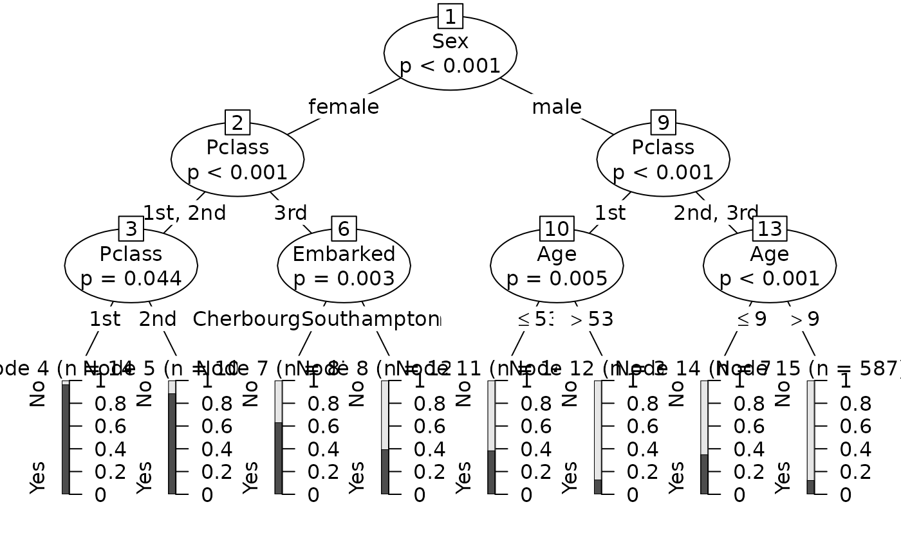
Sex is the first splitting variable, Pclass is the second and all the explanatory variables are used in the tree.
The proportion of survivors varies greatly from one terminal node to another.
nodeapply(as.simpleparty(arbre), ids = nodeids(arbre, terminal = TRUE), FUN = function(x) round(prop.table(info_node(x)$distribution),3))$`4`
No Yes
0.035 0.965
$`5`
No Yes
0.113 0.887
$`7`
No Yes
0.368 0.632
$`8`
No Yes
0.605 0.395
$`11`
No Yes
0.615 0.385
$`12`
No Yes
0.871 0.129
$`14`
No Yes
0.649 0.351
$`15`
No Yes
0.876 0.124 Thus, 96.5% of women travelling in 1st class survive, compared with only 12.4% of men over 9 years of age travelling in 2nd or 3rd class.
The graphical representation can be parameterized to obtain a simpler and more readable tree.
plot(arbre, inner_panel=node_inner(arbre,id=FALSE,pval=FALSE), terminal_panel=node_barplot(arbre,id=FALSE), gp=gpar(cex=0.6), ep_args=list(justmin=15))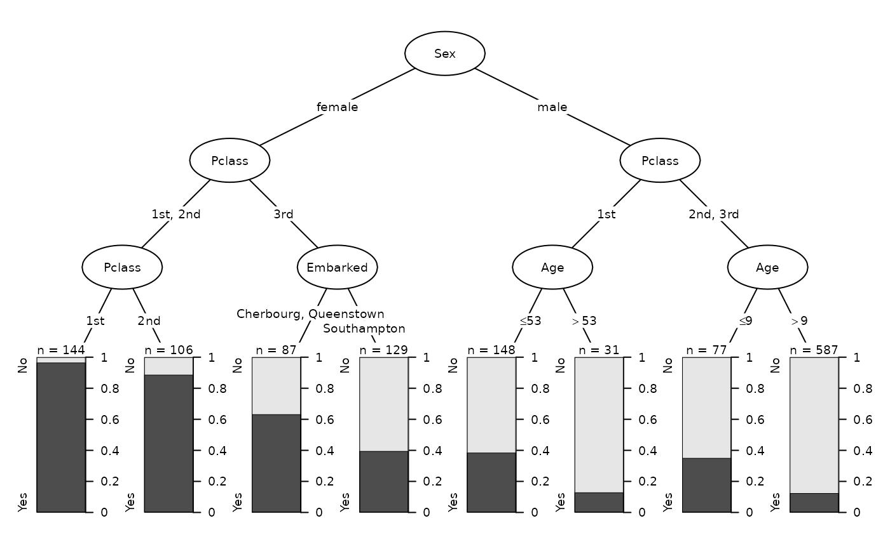
Note that the ggparty package graphically represents Ctree trees with the ggplot2 grammar.
To measure the performance of the tree, the AUC is calculated, by comparing predicted and observed survival.
pred_arbre <- predict(arbre, type='prob')[,'Yes']
auc_arbre <- AUC(pred_arbre, titanic$Survived, positive='Yes')
auc_arbre %>% round(3)[1] 0.838AUC is 0.838, which is a relatively high performance.
To plot the ROC curve of the model :
pROC::roc(titanic$Survived, pred_arbre) %>%
ggroc(legacy.axes=TRUE) +
geom_segment(aes(x=0,xend=1,y=0,yend=1), color="darkgrey", linetype="dashed") +
theme_bw() +
xlab("TFP") +
ylab("TVP")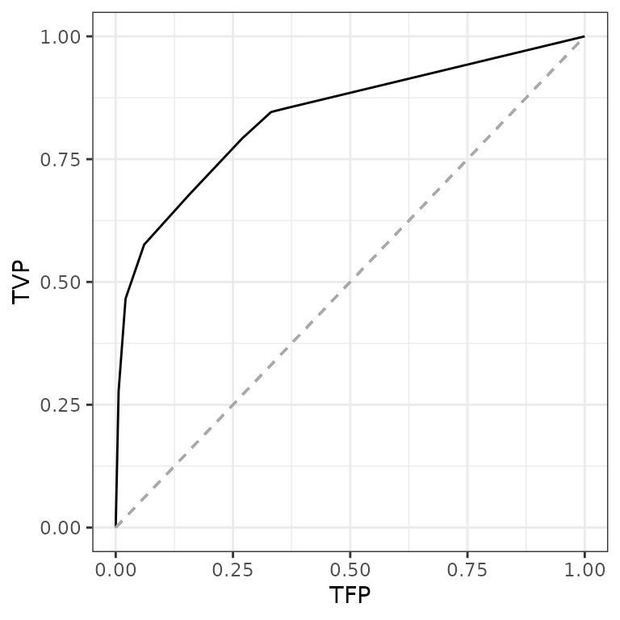
Other performance measures are based on the confusion matrix.
ifelse(pred_arbre > .5, "Yes", "No") %>%
factor %>%
caret::confusionMatrix(titanic$Survived, positive='Yes')Confusion Matrix and Statistics
Reference
Prediction No Yes
No 760 212
Yes 49 288
Accuracy : 0.8006
95% CI : (0.7779, 0.8219)
No Information Rate : 0.618
P-Value [Acc > NIR] : < 2.2e-16
Kappa : 0.5497
Mcnemar's Test P-Value : < 2.2e-16
Sensitivity : 0.5760
Specificity : 0.9394
Pos Pred Value : 0.8546
Neg Pred Value : 0.7819
Prevalence : 0.3820
Detection Rate : 0.2200
Detection Prevalence : 0.2574
Balanced Accuracy : 0.7577
'Positive' Class : Yes
The GetSplitStats function allows to examine the result of the competition between covariates in the choice of splitting variables. If, for a given node, the splitting variable is significantly more associated with the explained variable than the other explanatory variables, we can think that this split is stable.
GetSplitStats(arbre)$`1`
Sex Pclass Age Embarked
statistic 3.656074e+02 1.277615e+02 3.2203137 4.420789e+01
p.value 6.771232e-81 7.227818e-28 0.2606920 1.005629e-09
criterion -6.771232e-81 -7.227818e-28 -0.3020406 -1.005629e-09
$`2`
Pclass Age Embarked
statistic 1.154544e+02 7.07039686 2.433650e+01
p.value 2.549845e-25 0.02332660 1.557812e-05
criterion -2.549845e-25 -0.02360298 -1.557824e-05
$`3`
Pclass Age Embarked
statistic 5.91071179 0.2003411 4.2482494
p.value 0.04447125 0.9587381 0.3174531
criterion -0.04549043 -3.1878160 -0.3819240
$`6`
Age Embarked
statistic 1.7248154 12.759465580
p.value 0.3423996 0.003388277
criterion -0.4191579 -0.003394030
$`9`
Pclass Age Embarked
statistic 3.299374e+01 10.838488444 17.7107774921
p.value 2.054102e-07 0.002979392 0.0004277725
criterion -2.054103e-07 -0.002983839 -0.0004278640
$`10`
Age Embarked
statistic 9.079224404 2.1938826
p.value 0.005163910 0.5562985
criterion -0.005177289 -0.8126033
$`13`
Pclass Age Embarked
statistic 0.03486032 2.540589e+01 5.2715095
p.value 0.99675089 1.393491e-06 0.1999551
criterion -5.72937273 -1.393492e-06 -0.2230874In this case, for each of the nodes, the result of the competition is final (see criterion). The tree therefore appears to be stable.
Random forest
Then we build a random forest with conditional inference algorithm, mtry=2 and ntree=500.
foret <- party::cforest(Survived~., data=titanic, controls=party::cforest_unbiased(mtry=2,ntree=500))To compare the performance of the forest to that of the tree, the predictions and then the AUC are calculated.
pred_foret <- predict(foret, type='prob') %>%
do.call('rbind.data.frame',.) %>%
select(2) %>%
unlist
auc_foret <- AUC(pred_foret, titanic$Survived, positive='Yes')
auc_foret %>% round(3)[1] 0.879The performance of the forest is 0.879, therefore slightly better than that of the tree.
The OOB=TRUE option allows predictions to be made from out-of-bag observations, thus avoiding optimism bias.
pred_oob <- predict(foret, type='prob', OOB=TRUE) %>%
do.call('rbind.data.frame',.) %>%
select(2) %>%
unlist
auc_oob <- AUC(pred_oob, titanic$Survived, positive='Yes')
auc_oob %>% round(3)[1] 0.847Calculated in this way, the performance is indeed slightly lower (0.847).
Surrogate tree
The so-called “surrogate tree” can be a way to synthesize a complex model.
surro <- SurrogateTree(foret, maxdepth=3)
surro$r.squared %>% round(3)[1] 0.96
plot(surro$tree, inner_panel=node_inner(surro$tree,id=FALSE,pval=FALSE), terminal_panel=node_boxplot(surro$tree,id=FALSE), gp=gpar(cex=0.6), ep_args=list(justmin=15))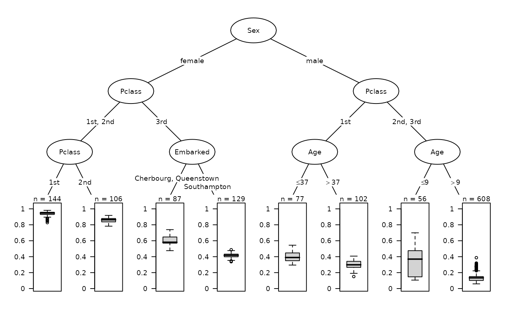
The surrogate tree reproduces here very faithfully the predictions of the random forest (R2 = 0.96). It is also very similar to the initial classification tree.
Variable importance
To go further in the interpretation of the results, permutation variable importance is calculated (using AUC as a performance measure). Since the explanatory variables have little correlation with each other, it is not necessary to use the “conditional permutation scheme” (available with the conditional=TRUE option in the varImpAUC function).
Sex Pclass Age Embarked
-0.213 -0.066 -0.026 -0.008
ggVarImp(-importance)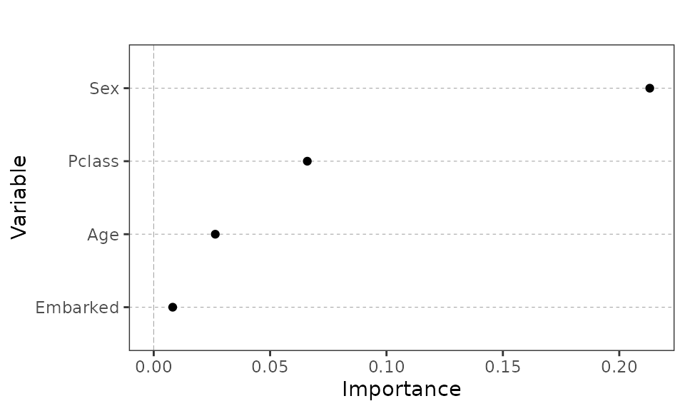
Sex is the most important variable, ahead of Pclass, Age and Embarked (whose importance is close to zero).
First order effects
The calculation of partial dependences of all the covariates can then be performed using the GetPartialData function.
pdep <- GetPartialData(foret, which.class=2, probs=1:19/20, prob=TRUE)
pdep var cat value
1 Sex female 0.6705362
2 Sex male 0.2105944
3 Pclass 1st 0.5630163
4 Pclass 2nd 0.4123658
5 Pclass 3rd 0.2726452
6 Age 5 0.5535410
7 Age 14 0.4094217
8 Age 18 0.3835784
9 Age 19 0.3851776
10 Age 21 0.3849032
11 Age 22 0.3848739
12 Age 24 0.3860633
13 Age 25 0.3910394
14 Age 26 0.3897490
15 Age 28 0.3692686
16 Age 30 0.3742014
17 Age 31 0.3977995
18 Age 33 0.3602312
19 Age 36 0.3536723
20 Age 39 0.3411718
21 Age 42 0.3396432
22 Age 45 0.3421748
23 Age 50 0.3443513
24 Age 57 0.3187270
25 Embarked Cherbourg 0.4603041
[ reached 'max' / getOption("max.print") -- omitted 2 rows ]They can be represented graphically.
ggForestEffects(pdep, vline=mean(pred_foret), xlab="Probability of survival") +
xlim(c(0,1))
The dashed line represents the average predicted probability of survival. We can see for example that the probability of survival is much higher for women or that it decreases when we go from 1st to 3rd class.
We’re zooming in on age to see its effect more closely. Partial dependencies are calculated for 40 quantiles of the age distribution, this high number allowing a more precise examination.
pdep_age <- pdp::partial(foret, 'Age', which.class=2, prob=TRUE, quantiles=TRUE, probs=1:39/40)
ggplot(pdep_age, aes(x=Age, y=yhat)) +
geom_line() +
geom_hline(aes(yintercept=mean(pred_foret)), size=0.2, linetype='dashed', color='black') +
ylim(c(0,1)) +
theme_bw() +
ylab("Probability of survival")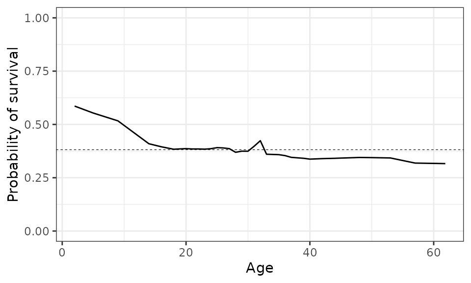
The probability of survival for young children is high, but drops rapidly with age. It is around the average for young adults and declines again after age 30.
We often limit ourselves to examining average survival probabilities, but we can also look at their distribution, in numerical form :
pdep_ind <- GetPartialData(foret, which.class=2, probs=1:19/20, prob=TRUE, ice=TRUE)
pdep_ind %>% group_by(var, cat) %>% summarise(prob = mean(value) %>% round(3),
Q1 = quantile(value, 0.25) %>% round(3),
Q3 = quantile(value, 0.75) %>% round(3))# A tibble: 27 x 5
# Groups: var [4]
var cat prob Q1 Q3
<fct> <chr> <dbl> <dbl> <dbl>
1 Age 14 0.409 0.137 0.596
2 Age 18 0.384 0.12 0.568
3 Age 19 0.385 0.124 0.567
4 Age 21 0.385 0.131 0.562
5 Age 22 0.385 0.124 0.576
6 Age 24 0.386 0.139 0.572
7 Age 25 0.391 0.167 0.556
8 Age 26 0.39 0.16 0.556
9 Age 28 0.369 0.136 0.512
10 Age 30 0.374 0.155 0.509
# … with 17 more rowsOr in graphical form :
ggplot(pdep_ind, aes(x = value, y = cat, group = cat)) +
geom_boxplot(aes(fill=var), notch=TRUE) +
geom_vline(aes(xintercept=median(pred_foret)), size=0.2, linetype='dashed', color='black') +
facet_grid(var ~ ., scales = "free_y", space = "free_y") +
theme_bw() +
theme(panel.grid = element_blank(),
panel.grid.major.y = element_line(size=.1, color="grey70"),
legend.position = "none",
strip.text.y = element_text(angle = 0)) +
xlim(c(0,1)) +
xlab("Probability of survival") +
ylab("")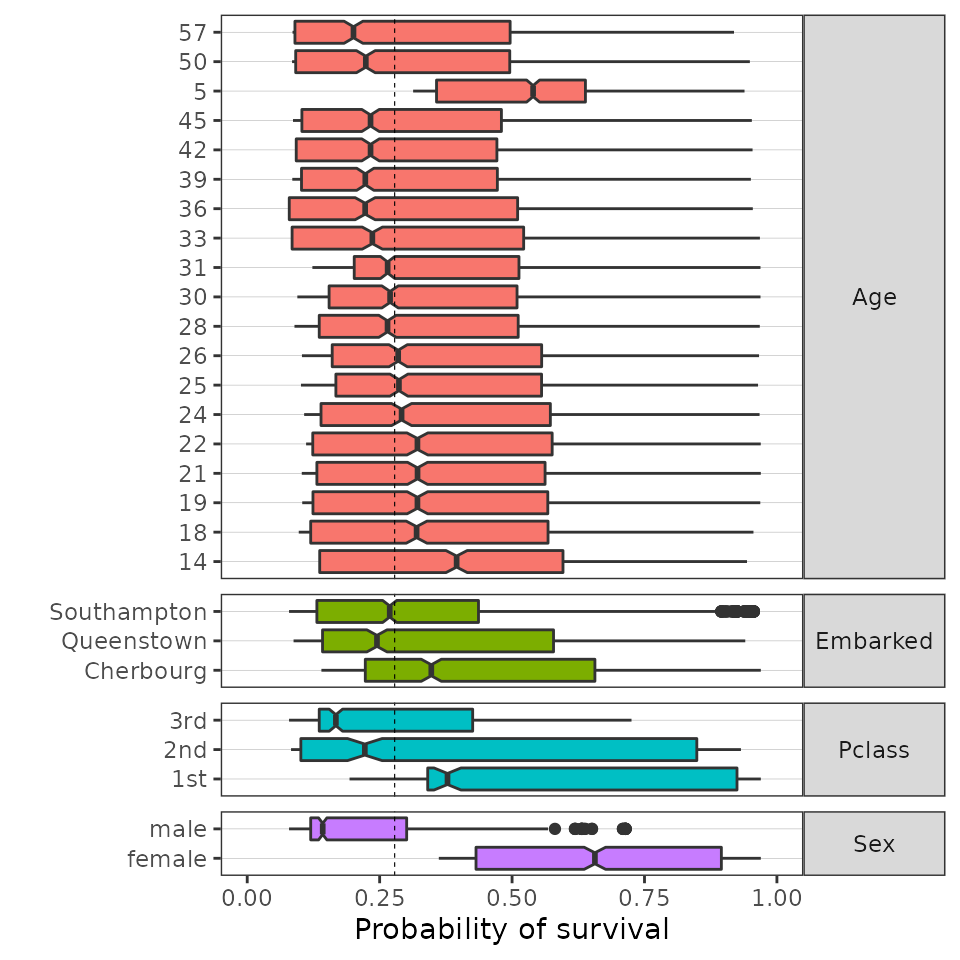
The accumulated local effects (ALE) of all explanatory variables can be calculated simply with the GetAleData function.
ale <- GetAleData(foret)
ale var cat value
1 Sex female 0.294845647
2 Sex male -0.172964164
3 Pclass 3rd -0.110876498
4 Pclass 2nd 0.029704971
5 Pclass 1st 0.169489816
6 Age 0.1667 0.193010029
7 Age 5 0.152359060
8 Age 14 0.027508715
9 Age 18 0.006407634
10 Age 19 0.009102306
11 Age 21 0.009971552
12 Age 22 0.013308471
13 Age 24 0.014876852
14 Age 25 0.024807359
15 Age 26 0.022475715
16 Age 28 0.001325135
17 Age 30 0.006729842
18 Age 31 0.028375757
19 Age 33 -0.028935497
20 Age 36 -0.036513377
21 Age 39 -0.053388466
22 Age 42 -0.054525338
23 Age 45 -0.053924936
24 Age 50 -0.043628556
25 Age 57 -0.107322361
[ reached 'max' / getOption("max.print") -- omitted 4 rows ]The effects are then represented graphically. These are very convergent with the partial dependences, which is not surprising given that the explanatory variables here have little correlation.
ggForestEffects(ale)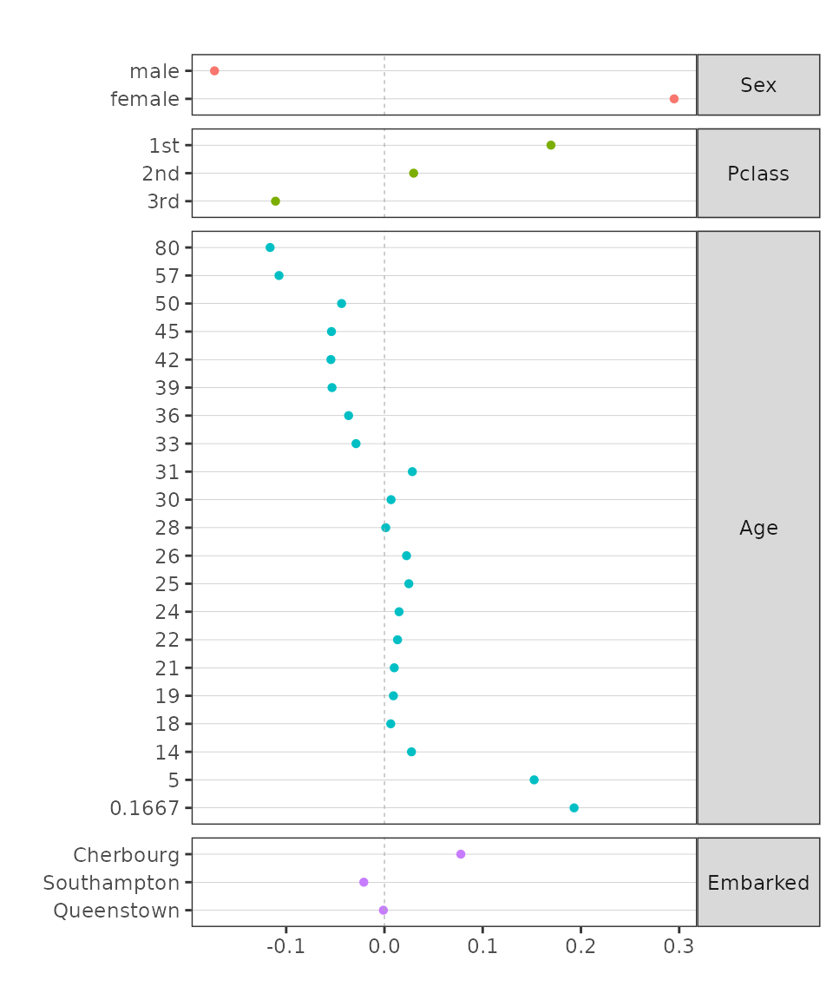
Interactions
We now wish to identify the main 2nd order interactions, using the algorithm of Greenwell et al (2018) available with GetInteractionStrength (a simple wrapper for vint function in vip package).
vint <- GetInteractionStrength(foret)
vint# A tibble: 6 x 2
Variables Interaction
<fct> <dbl>
1 Sex*Pclass 0.330
2 Sex*Age 0.0636
3 Pclass*Embarked 0.0508
4 Pclass*Age 0.0482
5 Age*Embarked 0.0349
6 Sex*Embarked 0.0255The interaction between Sex and Pclass is by far the most pronounced.
The main second order interactions are then studied using partial dependence, with partial function from pdp package.
pdep_sexclass <- pdp::partial(foret, c('Sex','Pclass'), quantiles=TRUE, probs=1:19/20, which.class=2L, prob=TRUE)
ggplot(pdep_sexclass, aes(Pclass, yhat)) +
geom_point(aes(color=Sex)) +
ylim(0,1) +
theme_bw()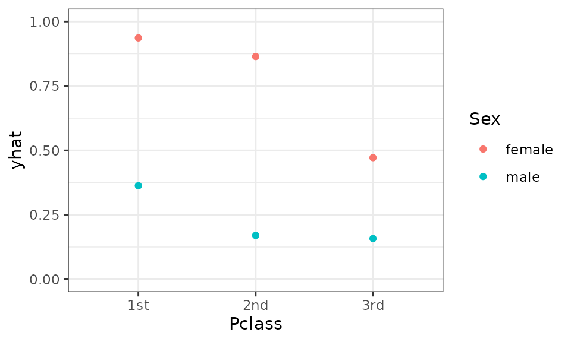
Pclass has a greater effect on women than on men. In women, it opposes the 1st and 2nd classes to the 3rd; in men, the 1st class opposes the others.
pdep_sexage <- pdp::partial(foret, c('Sex','Age'), quantiles=TRUE, probs=1:19/20, which.class=2L, prob=TRUE)
ggplot(pdep_sexage, aes(Age, yhat)) +
geom_line(aes(color=Sex)) +
ylim(0,1) +
theme_bw()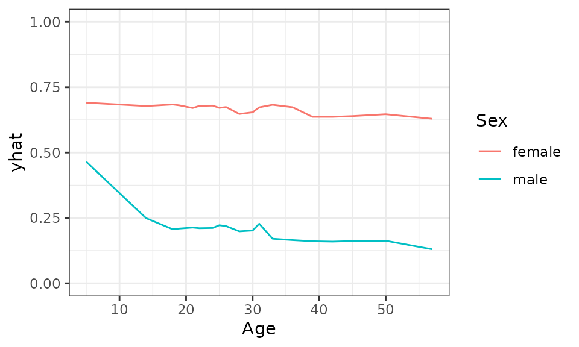
Age has little effect on survival for females, while it plays a more pronounced role for males, with young boys having a higher probability of survival than adult men.
An interaction of order 3 using partial dependence :
pdep_sexclassage <- pdp::partial(foret, c('Sex','Pclass','Age'), quantiles=TRUE, probs=1:19/20, which.class=2L, prob=TRUE)
cols <- c(paste0('dodgerblue',c(4,3,1)),paste0('tomato',c(4,3,1)))
pdep_sexclassage %>% mutate(sexclass = interaction(Pclass,Sex)) %>%
ggplot(aes(x=Age, y=yhat)) +
geom_line(aes(colour=sexclass)) +
scale_color_manual(values=cols) +
ylim(0,1) +
theme_bw()
For example, we see that the age effect plays mainly for 2nd and 3rd class males.
Alternatively, second order interactions can be analyzed using accumulated local effects (excluding interactions between two categorical variables).
ale_sex_age = GetAleData(foret, xnames=c("Sex","Age"), order=2)
ale_sex_age %>% ggplot(aes(Age, value)) +
geom_line(aes(color=Sex)) +
geom_hline(yintercept=0, linetype=2, color='gray60') +
theme_bw()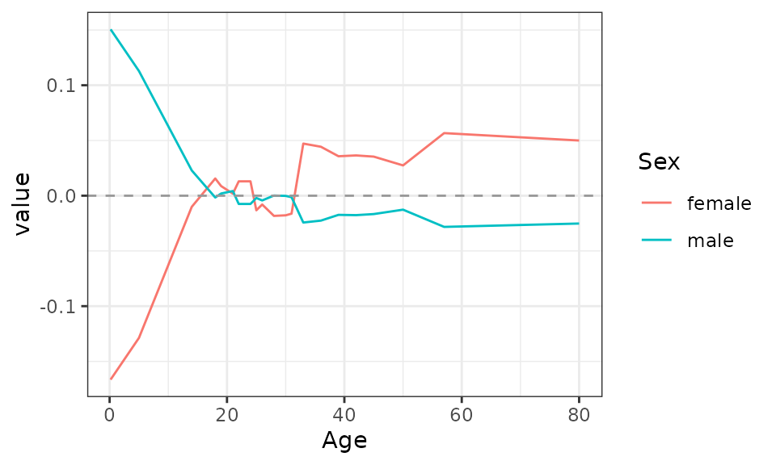
The additional effect of the interaction between Sex and Age (relative to the main effects of these variables) is mainly present for children: being a boy is associated with a higher probability of survival and vice versa for girls.
Prototypes and outliers
The prototypes are observations that are representative of their class. The calculation is based on the proximity matrix between observations.
prox <- proximity(foret)
proto <- Prototypes(titanic$Survived, titanic[,-1], prox)
proto$Yes
Sex Pclass Age Embarked
[1,] "female" "1st" "22" "Cherbourg"
[2,] "female" "1st" "23" "Southampton"
[3,] "female" "1st" "24" "Southampton"
[4,] "female" "1st" "36" "Southampton"
[5,] "female" "1st" "30" "Southampton"
$No
Sex Pclass Age Embarked
[1,] "male" "2nd" "30" "Southampton"
[2,] "male" "2nd" "21" "Southampton"
[3,] "male" "1st" "44" "Southampton"
[4,] "male" "3rd" "23" "Southampton"
[5,] "male" "3rd" "19" "Southampton"The prototypes of survivors are all adult women traveling first class. The prototypes of non-survivors are all adult males.
The proximity matrix also makes it possible to identify outliers.
out <- bind_cols(pred=round(pred_foret,2),titanic) %>%
Outliers(prox, titanic$Survived, .)
boxplot(out$scores)Only a few observations have a score above 10 (the threshold suggested by Breiman).
arrange(out$outliers, Survived, desc(scores)) %>%
split(.$Survived)$No
rowname pred Survived Sex Pclass Age Embarked scores
1 106 0.95 No female 1st 36 Cherbourg 40.88546
2 287 0.87 No female 1st 63 Southampton 40.76770
3 170 0.94 No female 1st 50 Cherbourg 40.72306
4 3 0.87 No female 1st 2 Southampton 37.66176
5 5 0.92 No female 1st 25 Southampton 35.12976
6 457 0.78 No female 2nd 60 Southampton 13.29295
7 491 0.79 No female 2nd 57 Southampton 13.19947
8 366 0.82 No female 2nd 44 Southampton 11.46811
9 446 0.87 No female 2nd 18 Southampton 11.45314
[ reached 'max' / getOption("max.print") -- omitted 1 rows ]
$Yes
rowname pred Survived Sex Pclass Age Embarked scores
11 521 0.33 Yes male 2nd 20 Cherbourg 15.62716
12 539 0.27 Yes male 2nd 30 Cherbourg 14.88285
13 433 0.09 Yes male 2nd 62 Southampton 14.82393
14 527 0.27 Yes male 2nd 29 Cherbourg 14.50363
15 525 0.27 Yes male 2nd NA Cherbourg 14.24385
16 918 0.15 Yes male 3rd 39 Cherbourg 13.77525
17 493 0.62 Yes male 2nd 1 Cherbourg 13.00300
18 455 0.09 Yes male 2nd 42 Southampton 11.72386
19 504 0.10 Yes male 2nd 19 Southampton 11.63046
[ reached 'max' / getOption("max.print") -- omitted 2 rows ]Outliers among survivors are women travelling in 1st or 2nd class, whose predicted probability of survival is very high. Conversely, outliers among non-survivors are males travelling in 2nd or 3rd class, whose predicted probability of survival is low.
Feature selection
Variable selection is of little use in this case, where there are only four explanatory variables. However, as an illustration, the “recursive feature elimination” algorithm is applied. Note that this procedure can be time consuming, even in its parallelized version (especially for the ‘ALT’ and ‘HAPF’ algorithms).
featsel <- FeatureSelection(titanic$Survived, titanic[,-1], method="RFE", positive="Yes")
featsel$selection.0se[1] "Sex" "Pclass" "Age" "Embarked"
featsel$selection.1se[1] "Sex" "Pclass"The algorithm suggests to keep the set of variables, or to eliminate Age and Embarked variables if one is ready to lose some performance (“1 standard error rule”).
Parallelization
moreparty package provides parallelized versions of cforest, varImp and varImpAUC functions, to save computation time. For example, to parallelize the computation of variable importance :
library(doParallel)
registerDoParallel(cores=2)
fastvarImpAUC(foret)
stopImplicitCluster() Sex Pclass Age Embarked
0.23524608 0.07358493 0.02974304 0.01101097 Parallelization is also an option for many of the functions we have used here.